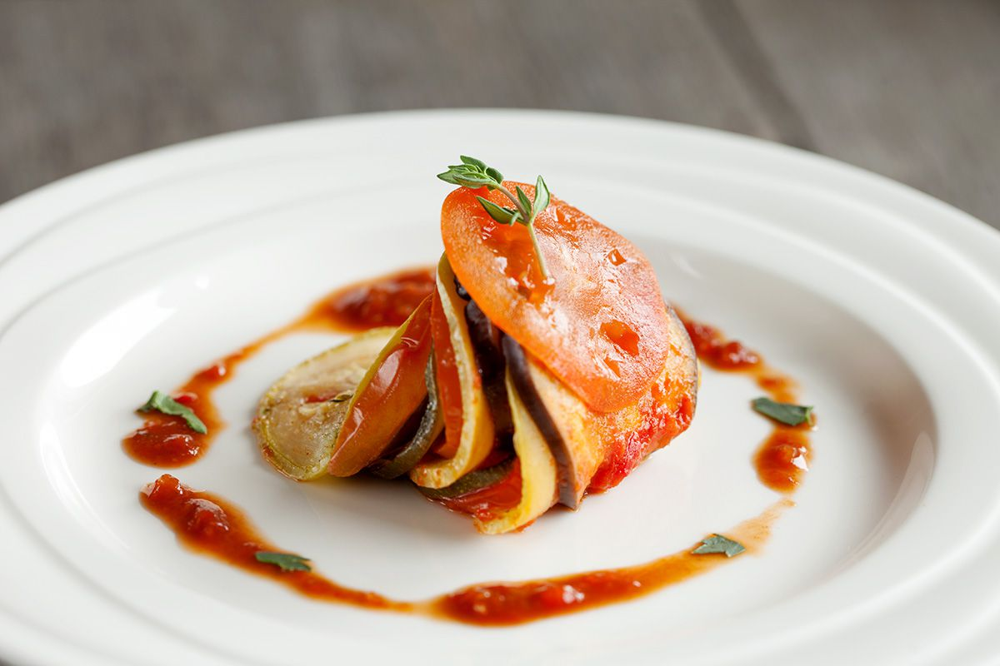

Ratatouille Recipe

Descriptions
A seasoned stew made of eggplant, tomatoes, green peppers, squash, and sometimes meat.
Ratatouille is a rustic southern French vegetable stew made with eggplant, bell peppers, zucchini, yellow squash, onions, and tomatoes.
In some versions, the vegetables are combined and cooked together for a long period of time until they practically melt.
Its official French name is Ratatouille Niçoise. The traditional recipe calls for tomatoes, eggplant, zucchini, peppers and onions. ...
As mentioned abovethe veggies can simply be “rough cut” and tossed in with some olive oil and herbs all together to create a tomato stew to serve along with a starchy something.
If you make true ratatouille, you distinctly taste the eggplant, the tomatoes and the other ingredients with each bite. Ratatouille can accompany almost any kind of meat, poultry or seafood.
It's particularly wonderful alongside an omelet for lunch.
Ingredients
- 1 (6 ounce) can tomato paste
- 1/2 onion, chopped
- 1/4 cup minced garlic
- 1 tablespoon olive oil
- 3/4 cup water
- salt and ground black pepper to taste
- 1 small eggplant, trimmed and very thinly sliced
- 1 zucchini, trimmed and very thinly sliced
- 1 yellow squash, trimmed and very thinly sliced
- 1 red bell pepper, cored and very thinly sliced
- 3 tablespoons olive oil, or to taste
- 1 teaspoon fresh thyme leaves, or to taste
- 3 tablespoons mascarpone cheese
Steps
- Preheat the over to 375 degrees F (190 degrees C).
- Spread tomato paste into the bottom of a 10x10-inch baking dish.
Sprinkle with onion and garlic and stir in 1 tablespoon olive oil and water until thoroughly combined. Season with salt and black pepper.
- Arrange alternating slices of eggplant, zucchini, yellow squash, red bell pepper, and yellow bell pepper, starting at the outer edge of the dish and
working concentrically towards the center. Overlap the slices a little to display the colors. Drizzle the vegetables with 3 tablespoons olive oil and
season with salt and black pepper. Sprinkle with thyme leaves. Cover vegetables with a piece of parchment paper cut to fit inside.
- Bake in the preheated oven until vegetables are roasted and tender, about 45 minutes. Serve with dollops of mascarpone cheese.